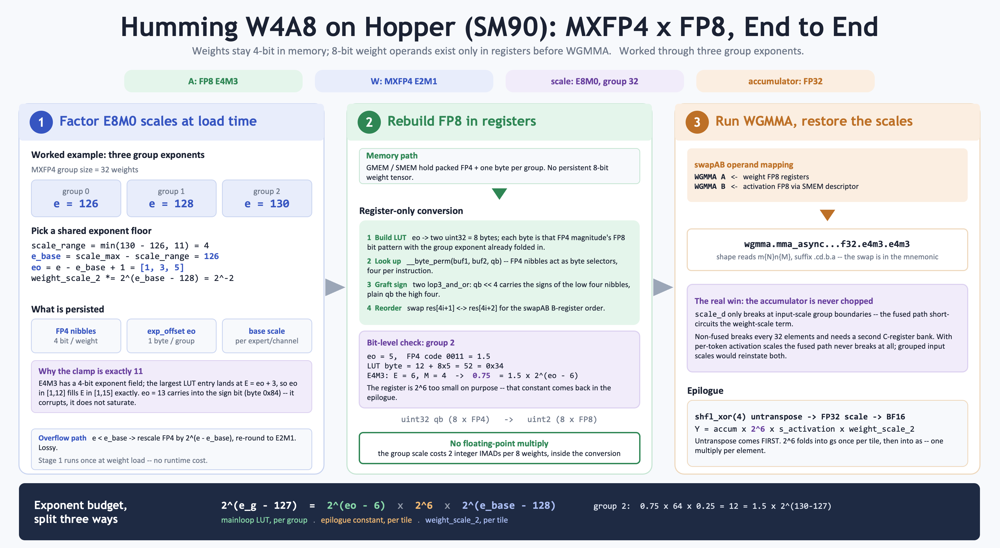
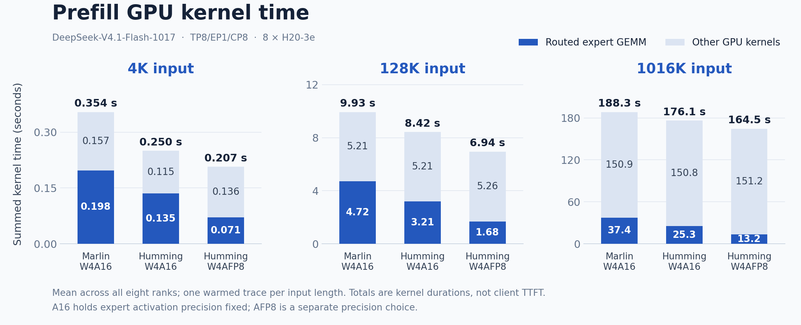

Humming in SGLang: Flexible Low‑Bit Kernels for Efficient MoE Serving
On this page
- One Backend Across Quantized Representations
- Prepare Once, Specialize for the Workload
- Hopper: Compact MXFP4 Storage, FP8 Computation
- Blackwell: Additional Native Compute Paths
- Connecting Humming to SGLang
- Using Humming in SGLang
- Serving Results on H20-3e
- Prefill
- Decode
- Understanding the Results
- Benchmark Details
- What Comes Next
- Humming
- SGLang Integration
- Acknowledgments
Humming is a lightweight, JIT-compiled kernel library for quantized dense and mixture-of-experts (MoE) inference. Its SGLang integration connects low-bit checkpoints to specialized kernels while preserving the framework’s routing, scheduling, and distributed execution.
With Humming 0.1.18, that integration extends across more quantization schemes and GPU architectures. This post explains how Humming prepares weights, processes activations, and maps computation to Hopper and Blackwell. We also introduce a shared activation-expression interface for SGLang’s MoE runners and show results with that integration enabled.
On DeepSeek-V4.1-Flash-1017, Humming delivers 1.07–1.23× prefill speedups at the same A16 precision relative to Marlin in the tested long-context cases. We evaluate FP8 expert activations separately as a deployment option, alongside their quality and speculative-decoding acceptance results.
One Backend Across Quantized Representations
MoE inference combines two challenges: large expert-weight storage and a changing number of tokens assigned to each expert. Four-bit weights reduce storage and memory traffic, but efficient serving also requires suitable dequantization, Tensor Core instructions, and enough parallel work. Prefill and decode can favor different execution strategies for the same checkpoint.
Humming separates the representation of quantized data from its execution strategy. Compatible formats share components for data movement, dequantization, matrix multiplication, and output processing. The library supports dense and MoE GEMM, low-bit integer and floating-point weights, and multiple activation precisions. Supported combinations depend on the GPU, scale format, and tensor layout; the versioned configuration guide defines those contracts.
A checkpoint can retain its compact representation while the runtime selects a compatible computation path for the device and workload.
Prepare Once, Specialize for the Workload
At model load time, Humming converts supported checkpoint tensors and metadata into common weight and input schemas. Padding, transposition, interleaving, and scale rearrangement prepare the tensors for execution outside the request hot path.
Three configuration layers keep these responsibilities explicit.
LayerConfig describes shapes, numeric formats,
quantization, and storage layouts. ComputeConfig describes
dense, indexed, or grouped execution and accumulation semantics.
TuningConfig selects tile shapes, data transfers, pipeline
stages, and scheduling. Compatible compute choices can reuse prepared
weights; changing a storage layout or target architecture requires
preparing them again.
At inference time, the unified process_input
interface handles compatible combinations of activation evaluation,
Hadamard transforms, layout processing, and quantization. Input
quantization includes static tensor scales, dynamic token or group
scales, and supported secondary-scale combinations. The selected
operations depend on the layer; some scale calculations require multiple
passes.
Humming then composes and JIT-compiles the selected GEMM. Device- and shape-specific choices balance parallelism, weight reuse, and pipeline depth, with compiled binaries cached for subsequent calls. The 0.1.18 release refines these choices, including MoE scheduling and weight eviction. This avoids precompiling every format and serving shape.
Hopper: Compact MXFP4 Storage, FP8 Computation
A representative Hopper path combines MXFP4 weights with per-token FP8 activations. Weights remain packed at four bits in global and shared memory; Humming reconstructs FP8 operands immediately before Tensor Core computation.

Figure 1. A representative per-token FP8 path: prepare scales at load time, reconstruct weights in registers, and apply the remaining scales after accumulation.
The path has three key steps:
- Factor scales during loading. Conceptually, each
UE8M0 group scale is decomposed as
s_g = s_base × 2^Δg. This path retains a base scale per expert and sublayer, plus a residual exponent code for each group. The encoding includes offsets needed for reconstruction. If the exponent span exceeds the supported FP8 range, preparation adjusts and requantizes affected FP4 values. - Reconstruct FP8 weights in registers. FP4 nibbles and residual exponents form FP8 E4M3 operands immediately before MMA. A transposed mapping places weight registers in WGMMA’s A operand and the shared-memory activation tile in its B operand, avoiding a materialized eight-bit weight tensor in memory.
- Apply the remaining scales in the epilogue. FP8 WGMMA accumulates into FP32. The epilogue applies the activation scale and factored base scale; residual exponents are already incorporated into the weight operands.
For example, take four group scales [1, 2, 4, 8], whose
base scale s_base=1 leaves residual exponents
[0, 1, 2, 3]. An FP4 value of 1.5 in the
scale-4 group is rebuilt as the E4M3 operand 0.1875; the
remaining weight factor is 32, restoring
0.1875 × 32 = 6 = 1.5 × 4. These values include the fixed
FP4-to-FP8 exponent-bias adjustment. The activation scale is applied
separately.
For E4M3, this path supports an exponent span of 11
without scale-range adjustment. Larger spans raise the minimum scale to
max_scale / 2^11; weights in affected groups are divided by
the corresponding power of two and rounded back to FP4, which can
introduce rounding error or underflow.
A load-time check with Humming 0.1.18 at TP8/EP1 found scale-range adjustment in 0% of valid target groups and 11.27% of valid draft groups, mainly because padded scales affect the draft’s range selection. This padding-induced issue has been fixed upstream in Humming PR #193. We will incorporate the fix in a follow-up Humming dependency upgrade.
The fused
E8M0 configuration connects preparation with execution. Other scale
layouts use their corresponding kernels and preparation rules. Humming
0.1.18 also improves the FP8_BLOCK grouped-contiguous
and indexed MoE
paths. Those use block-scaled activations; the AFP8 results below use
dynamic per-token E4M3 scales
(group_size=0), so they do not measure these
block-scale paths.
Blackwell: Additional Native Compute Paths
All measured results in this post are on Hopper H20-3e; this section describes Blackwell architecture support.
Humming’s architecture extends to Blackwell through BF16 UMMA and eligible FP8, FP4, and INT8 UMMA paths. Supported SM10x configurations can use UMMA, while supported SM12x block-scaled configurations use MXMMA.
These are device- and format-specific choices. INT8 UMMA is not available on every Blackwell device, and scale layouts must match the selected instruction path. The same configuration framework handles these constraints alongside tile and pipeline selection for different serving shapes.
Connecting Humming to SGLang
The original integration arrived through SGLang PR #23754, and PR #46018 updated it for Humming 0.1.18. SGLang owns expert routing, dispatch, token alignment, output reduction, and token order; Humming supplies compatible input processing and GEMM execution.
Quantization loading and expert execution are related but distinct responsibilities. SGLang can use Humming for compatible quantized linear layers, or select its MoE runner while retaining another native path for dense layers. It reads checkpoint metadata and preserves the input scales needed by the selected scheme. Choosing Humming does not automatically convert A16 activations to FP8, and static quantization still requires calibrated scales.
The proposed update in SGLang PR
#48524 connects gated MoE activations to process_input
through optional activation_type and
activation_impl fields. The caller specifies either split
or interleaved gate/up inputs and supplies a CUDA expression for the
activation. Built-in SiLU, clamped SiLU, erf-based GELU, and SiTU share
this interface.
For the down projection, compatible activation evaluation, Hadamard transformation, and quantization can therefore be expressed through one input-processing path. The implementation preserves BF16/FP16 rounding boundaries and avoids an unnecessary intermediate activation buffer when activation and quantization can be combined. This interface lets model-specific activations reuse the same input-processing path.
Humming supports native MXFP4 expert execution for DeepSeek-V4-Flash, DeepSeek-V4-Pro (including V4-Pro-0813), and DeepSeek-V4.1-Flash. The proposed shared input-processing interface also covers the gated activation paths used by GLM-5.2/5.3 and Kimi-K2.x/K3. Its Kimi-K3 support includes the native MXFP4 loader bridge adapted from the still-open PR #33884.
A separate proposed fix in PR #49873 makes standard EP dispatch estimate each rank’s routed work for GEMM tuning while fully counting replicated shared experts. The Humming EP8 measurements below include this fix.
The end-to-end results in this post cover DeepSeek-V4.1-Flash-1017 only. Compatible expert-parallel deployments can also use DeepEP FP8 dispatch, carrying quantized activations and their scales into Humming.
Using Humming in SGLang
Base Humming 0.1.18 support landed in SGLang commit ca939407. The benchmarks below also include the proposed input-processing integration, with the EP tuning fix applied to the Humming EP8 configuration. Exact source revisions are listed in Benchmark Details. The reported environment pins Humming 0.1.18; 0.1.19 has not been validated for these results.
Install the compiler extra matching your CUDA major version:
# CUDA 13
pip install "humming-kernels[cu13]==0.1.18"
# CUDA 12: use this instead
# pip install "humming-kernels[cu12]==0.1.18"Choose the scope of the backend.
--moe-runner-backend humming selects expert execution where
the checkpoint’s native quantization path supports Humming.
--quantization humming selects Humming’s model-level
quantization adapter for compatible linear and expert layers. For a
compatible MoE model using that adapter, select both.
To retain a checkpoint’s native dense-layer path while explicitly using FP8 E4M3 activations in its Humming experts:
SGLANG_HUMMING_INPUT_QUANT_CONFIG='{"dtype":"float8e4m3"}' \
python -m sglang.launch_server \
--model-path /path/to/supported-checkpoint \
--moe-runner-backend hummingAdd the model’s usual parallelism arguments. When using speculative
decoding, also select
--speculative-moe-runner-backend humming for the draft. Use
{"dtype":"bfloat16"} for an explicit BF16 activation
choice. The backend flag alone does not request FP8 activations.
Humming also supports online weight quantization during loading from an unquantized FP16/BF16 checkpoint. For example, this configuration requests MXFP4 weights with 32-element groups and UE8M0 scales, together with FP8 activations:
SGLANG_HUMMING_ONLINE_QUANT_CONFIG='{"dtype":"float4e2m1","group_size":32,"scale_dtype":"float8e8m0"}' \
SGLANG_HUMMING_INPUT_QUANT_CONFIG='{"dtype":"float8e4m3"}' \
python -m sglang.launch_server \
--model-path /path/to/supported-bf16-moe-checkpoint \
--quantization humming \
--moe-runner-backend hummingThe weight schema accepts dtype,
group_size, and scale_dtype; SGLang also
supports ignored_layers to leave selected layers
unconverted. For supported already-quantized checkpoints, online
conversion requires an explicit "force_requant":true in the
weight configuration. These settings select loading behavior; they do
not supply calibrated scales for static activation quantization. The 0.1.18
schemas define the format fields and compatibility rules.
The results below use an existing native FP8-dense/MXFP4-expert checkpoint, with explicit activation selection rather than online weight quantization.
Serving Results on H20-3e
We evaluate DeepSeek-V4.1-Flash-1017 on eight H20-3e GPUs, with TP8, prefill CP8 interleave, 16K-token prefill chunks, and DSpark block size 5. Target and draft use the same MoE backend. Dense layers retain their native FP8 path and expert weights use MXFP4. A16 means BF16 expert activations; AFP8 means FP8 E4M3 expert activations.
The EP1 columns compare Marlin and Humming at A16, and also report Humming’s AFP8 option. The EP8 columns compare Humming and FlashInfer 0.7.2 with FP8 expert activations for both target and draft. Humming EP8 includes the tuning fix from PR #49873. Benchmark Details lists the source revisions and reproduction commands.
Prefill
The table reports TTFT in seconds for exact-length synthetic token-ID inputs. Each entry is the median of three requests after warmup and a prefix-cache flush, at concurrency 1; K means 1,024.
| Input tokens | Marlin A16 (EP1) | Humming A16 (EP1) | Humming AFP8 (EP1) | Humming AFP8 (EP8) | FlashInfer AFP8 (EP8) |
|---|---|---|---|---|---|
| 4K | 0.338 | 0.274 | 0.215 | 0.241 | 0.219 |
| 64K | 4.533 | 3.762 | 3.026 | 3.381 | 3.306 |
| 128K | 10.033 | 8.495 | 7.024 | 7.693 | 7.565 |
| 256K | 23.843 | 20.813 | 17.894 | 19.358 | 19.155 |
| 512K | 63.443 | 57.398 | 51.554 | 54.496 | 54.109 |
| 1016K | 188.064 | 175.969 | 164.350 | 170.134 | 169.391 |
Within the EP1 study, Humming A16 delivers a 1.07–1.23× prefill speedup over Marlin A16. FP8 expert activations reduce it further. In the EP8 comparison, FlashInfer has lower median TTFT at all six measured lengths, with the relative difference narrowing at longer inputs.
Decode
Decode uses ShareGPT first-turn content repeated or truncated to 4K input tokens, followed by 1K output tokens, with prefix caching disabled. Output throughput includes prefill and serving overhead. Values are mean output tokens/s ± sample standard deviation across three runs.
| Concurrency | Marlin A16 (EP1) | Humming A16 (EP1) | Humming AFP8 (EP1) | Humming AFP8 (EP8) | FlashInfer AFP8 (EP8) |
|---|---|---|---|---|---|
| 1 | 323.7 ± 3.6 | 314.3 ± 3.2 | 367.1 ± 5.0 | 328.8 ± 16.5 | 315.4 ± 6.7 |
| 32 | 1661.5 ± 22.2 | 1721.6 ± 6.2 | 2314.1 ± 18.0 | 2269.4 ± 28.9 | 2261.6 ± 50.4 |
| 64 | 2044.1 ± 5.6 | 2200.4 ± 13.7 | 2865.8 ± 7.4 | 2839.5 ± 3.6 | 2883.0 ± 17.2 |
At EP1 and A16 precision, Humming’s mean throughput ranges from 2.89% lower at C1 to 7.65% higher at C64 than Marlin. Within Humming EP1, selecting AFP8 instead of A16 raises throughput by 16.79–34.41%.
With the EP tuning fix, Humming AFP8 at EP8 has observed mean throughput 4.25% higher at C1, 0.34% higher at C32, and 1.51% lower at C64 than the FlashInfer AFP8 reference. The detailed metrics below report TTFT, TPOT, DSpark acceptance, and estimated decode time per verify step.
The retained full GSM8K evaluations at EP1 score 97.12% for Marlin A16, 97.04% for Humming A16, and 96.82% for Humming AFP8. In a targeted RULER v1 retrieval check, Marlin A16 and Humming AFP8 each score 200/200 at nominal 32K and 128K. These results describe those evaluated configurations; they do not establish general accuracy equivalence or quality at the 1016K performance point.
Understanding the Results
The prefill profiles separate the backend effect from the activation-precision choice. At the same A16 precision, Humming’s routed-expert GEMMs take 31.6–32.4% less cumulative kernel time than Marlin across 4K, 128K, and 1016K. Within Humming, selecting AFP8 reduces that GEMM time by a further about 47.6%.
At 1016K, the remaining GPU kernels take roughly 151 seconds in all three configurations. This helps explain why the reduction in routed-GEMM time translates into a smaller end-to-end prefill speedup. The remainder includes attention, dense/shared-expert work, routing, activation, and communication; it is not an attention-only measurement.

Figure 2. Prefill kernel durations at TP8/EP1: one warmed capture per length, averaged across all eight ranks. The A16 pair holds activation precision fixed; AFP8 is a separate precision choice. Totals are summed GPU kernel durations, not client TTFT.
At C1, the A16 trace gives 3.77 ms per target verify for Humming’s routed GEMMs versus 4.21 ms for Marlin, while draft GEMMs take 0.195 ms versus 0.181 ms. Both use M=8 MoE tiles. The full decode-cycle comparison is included in Benchmark Details.
Benchmark Details
Environment and server commands
The tests use CUDA 13.0, Humming 0.1.18, and FlashInfer 0.7.2 on eight H20-3e GPUs. The checkpoint is DeepSeek-V4.1-Flash-1017, including its bundled DSpark draft.
All columns use SGLang
f644444, which includes the input-processing
integration proposed in #48524. Humming AFP8 EP8 additionally applies
the runtime change from PR #49873 at
6a7ea3f.
Choose a configuration below and point PYTHONPATH to the
corresponding source. Target and draft use the same MoE backend; these
runs do not set --quantization humming.
| Configuration | BACKEND |
EP |
Expert activation |
|---|---|---|---|
| Marlin A16 | marlin |
1 | bfloat16 |
| Humming A16 | humming |
1 | bfloat16 |
| Humming AFP8 | humming |
1 | float8e4m3 |
| Humming AFP8 | humming |
8 | float8e4m3 |
| FlashInfer AFP8 | flashinfer_mxfp4 |
8 | float8e4m3 |
Set MODE=prefill for the TTFT table or
MODE=decode for the throughput table. Humming uses indexed
GEMMs and dynamic per-token FP8 scales for AFP8.
The script’s ACTIVATION variable configures Humming.
FlashInfer’s FP8 activation path is selected by
--flashinfer-mxfp4-moe-precision fp8.
export MODEL_PATH=/path/to/DeepSeek-V4.1-Flash-1017
export PYTHONPATH=/path/to/selected-sglang-source/python
export LD_LIBRARY_PATH="/usr/local/cuda/compat/lib${LD_LIBRARY_PATH:+:$LD_LIBRARY_PATH}"
export CUDA_VISIBLE_DEVICES=0,1,2,3,4,5,6,7
export OMP_NUM_THREADS=1
export SGLANG_OPT_FP8_WO_A_GEMM=1
export SGLANG_JIT_DEEPGEMM_PRECOMPILE=0
BACKEND=humming
EP=8
ACTIVATION=float8e4m3
MODE=decode
EXTRA_ARGS=()
unset SGLANG_HUMMING_INPUT_QUANT_CONFIG SGLANG_HUMMING_MOE_GEMM_TYPE
if [[ "$BACKEND" == humming ]]; then
export SGLANG_HUMMING_MOE_GEMM_TYPE=indexed
export SGLANG_HUMMING_INPUT_QUANT_CONFIG="{\"dtype\":\"$ACTIVATION\"}"
elif [[ "$BACKEND" == flashinfer_mxfp4 ]]; then
EXTRA_ARGS+=(--flashinfer-mxfp4-moe-precision fp8)
fi
if [[ "$MODE" == decode ]]; then
EXTRA_ARGS+=(--disable-radix-cache --stream-interval 1)
fi
python -m sglang.launch_server \
--model-path "$MODEL_PATH" --served-model-name dsv41-flash-1017 \
--host 127.0.0.1 --port 31018 --trust-remote-code --language-model-only \
--tp-size 8 --ep-size "$EP" --enable-prefill-cp --cp-strategy interleave \
--enable-cp-decode-attn-tp --moe-a2a-backend none \
--engram-config '{"placement":"cpu","replication":"none"}' \
--no-enable-decoder-swa-bounded-replay --swa-full-tokens-ratio 0.05 \
--speculative-algorithm DSPARK --speculative-dspark-block-size 5 \
--mem-fraction-static 0.84 --max-running-requests 64 \
--cuda-graph-max-bs-decode 64 --chunked-prefill-size 16384 \
--enable-cache-report --enable-metrics \
--reasoning-parser auto --tool-call-parser auto --random-seed 1 \
--moe-runner-backend "$BACKEND" --speculative-moe-runner-backend "$BACKEND" \
"${EXTRA_ARGS[@]}"Benchmark commands and decode metrics
Run the client in a second shell, with MODEL_PATH set as
above and PYTHONPATH pointing to the baseline
f644444 source.
Prefill. For each length in the table, report median TTFT over three requests after one warmup and a prefix-cache flush. This example uses 128K input and 32 output tokens at C1:
export SGLANG_IS_IN_CI=0
mkdir -p results
LENGTH=131072
python -m sglang.benchmark.serving \
--backend sglang --host 127.0.0.1 --port 31018 \
--model "$MODEL_PATH" --served-model-name dsv41-flash-1017 \
--dataset-name random-ids --random-input-len "$LENGTH" \
--random-output-len 32 --random-range-ratio 1 \
--num-prompts 3 --max-concurrency 1 --request-rate inf \
--seed 1024 --temperature 0 --warmup-requests 1 --flush-cache \
--cache-report --output-details --tokenize-prompt \
--output-file "results/ttft-${LENGTH}.jsonl"Decode. Use ShareGPT, with prompts normalized to 4,096 input tokens by repetition or truncation and exactly 1,024 generated tokens. For C1/C32/C64, use 10/160/320 measured requests, respectively. Run the warmup and measurement pair three times; the example below uses C32.
export SGLANG_IS_IN_CI=0
mkdir -p results
export SHAREGPT_PATH=/path/to/ShareGPT_V3_unfiltered_cleaned_split.json
C=32
N=160
DECODE_ARGS=(
--backend sglang --host 127.0.0.1 --port 31018
--model "$MODEL_PATH" --served-model-name dsv41-flash-1017
--dataset-name random --dataset-path "$SHAREGPT_PATH"
--random-input-len 4096 --random-output-len 1024 --random-range-ratio 1
--max-concurrency "$C" --request-rate inf --temperature 0 --warmup-requests 0
--cache-report --output-details --tokenize-prompt
)
python -m sglang.benchmark.serving "${DECODE_ARGS[@]}" \
--num-prompts "$C" --seed 0 --output-file results/warmup.jsonl
python -m sglang.benchmark.serving "${DECODE_ARGS[@]}" \
--num-prompts "$N" --seed 1 --output-file "results/decode-c${C}.jsonl"Decode latency and acceptance. Values are means ± sample SD across three runs. TTFT includes queueing; TPOT measures time per output token after the first. Acceptance is mean output tokens per verify step, averaged over requests.
Estimated decode ms/step is
1,000 × Σ(E2E − TTFT) / Σ(verify steps) within each run.
Verify counts are recovered per request from output length divided by
acceptance. This separates cycle cost from tokens produced per cycle,
while including draft, verification, scheduling, and transport; it is
not GPU kernel time.
| Configuration | C | TTFT (ms) | TPOT (ms) | Acceptance | Decode ms/step (est.) |
|---|---|---|---|---|---|
| Marlin A16 (EP1) | 1 | 321.238 ± 0.687 | 2.776 ± 0.036 | 5.139 ± 0.058 | 13.947 ± 0.007 |
| Marlin A16 (EP1) | 32 | 1558.744 ± 1.860 | 16.768 ± 0.079 | 5.159 ± 0.035 | 84.089 ± 0.614 |
| Marlin A16 (EP1) | 64 | 3435.942 ± 29.612 | 26.989 ± 0.050 | 5.205 ± 0.004 | 136.640 ± 0.327 |
| Humming A16 (EP1) | 1 | 263.333 ± 1.423 | 2.924 ± 0.031 | 5.115 ± 0.047 | 14.578 ± 0.013 |
| Humming A16 (EP1) | 32 | 1294.003 ± 37.182 | 16.335 ± 0.061 | 5.153 ± 0.022 | 81.480 ± 0.501 |
| Humming A16 (EP1) | 64 | 2900.157 ± 45.025 | 25.159 ± 0.036 | 5.211 ± 0.001 | 127.437 ± 0.117 |
| Humming AFP8 (EP1) | 1 | 207.182 ± 1.233 | 2.522 ± 0.039 | 5.142 ± 0.051 | 12.612 ± 0.001 |
| Humming AFP8 (EP1) | 32 | 1001.886 ± 4.787 | 12.234 ± 0.093 | 5.191 ± 0.029 | 61.830 ± 0.273 |
| Humming AFP8 (EP1) | 64 | 2231.068 ± 25.516 | 19.354 ± 0.021 | 5.201 ± 0.004 | 97.812 ± 0.039 |
| Humming AFP8 (EP8) | 1 | 221.653 ± 0.589 | 2.830 ± 0.157 | 5.106 ± 0.170 | 13.966 ± 0.010 |
| Humming AFP8 (EP8) | 32 | 1057.362 ± 27.748 | 12.320 ± 0.109 | 5.172 ± 0.030 | 61.958 ± 0.532 |
| Humming AFP8 (EP8) | 64 | 2334.429 ± 5.345 | 19.505 ± 0.073 | 5.220 ± 0.019 | 99.194 ± 0.267 |
| FlashInfer AFP8 (EP8) | 1 | 208.612 ± 2.625 | 2.968 ± 0.065 | 5.089 ± 0.091 | 14.696 ± 0.014 |
| FlashInfer AFP8 (EP8) | 32 | 1019.455 ± 10.509 | 12.469 ± 0.130 | 5.179 ± 0.033 | 62.803 ± 0.133 |
| FlashInfer AFP8 (EP8) | 64 | 2279.674 ± 16.318 | 18.990 ± 0.030 | 5.221 ± 0.013 | 96.522 ± 0.410 |
Quality checks. The reported GSM8K scores use all
1,319 test questions with eight-shot prompting. The RULER check uses
niah_multikey_2, with 200 examples each at 32K and 128K for
Marlin A16 and Humming AFP8. Both use temperature 0 and
thinking=false. These retained quality results cover the
stated EP1 configurations.
What Comes Next
Humming
- Autotuning. Humming plans to introduce autotune, benchmarking candidate configurations on the target device to find better execution parameters for each workload. This will complement the existing heuristics.
- Broader hardware support. Upcoming work includes Rubin Locality Domains, T-Head’s Zhenwu M890, and more CUDA-compatible accelerators, with kernels adapted to their compute and memory characteristics.
SGLang Integration
- Simpler model integration. Build on unified input processing to support more native quantized checkpoints and custom activations, while reducing padding, repacking, and peak memory during weight loading.
- Better parallel execution. Improve EP-aware tuning, quantized DeepEP dispatch, and dynamic expert migration. Extend end-to-end coverage to these paths and B300 deployments.
Follow the SGLang Humming tracking issue #46579 for integration progress.
Acknowledgments
This work was jointly developed by members of the Ant Group Venus and SCT teams and the SGLang community.
- Ant Group Venus Team: Jinzhen Lin
- Ant Group SCT Team: Zekai Gu, ZhiLin Huang
- SGLang Team: Peng Zhang, Xiaoyu Zhang
We thank the SGLang maintainers and reviewers who helped bring the quantization, MoE, and DeepEP integrations to production. We also thank Jiang Shao and the NVIDIA team for adapting Humming’s MXFP4 × FP8 scale-fusion approach in FlashInfer PR #3738.